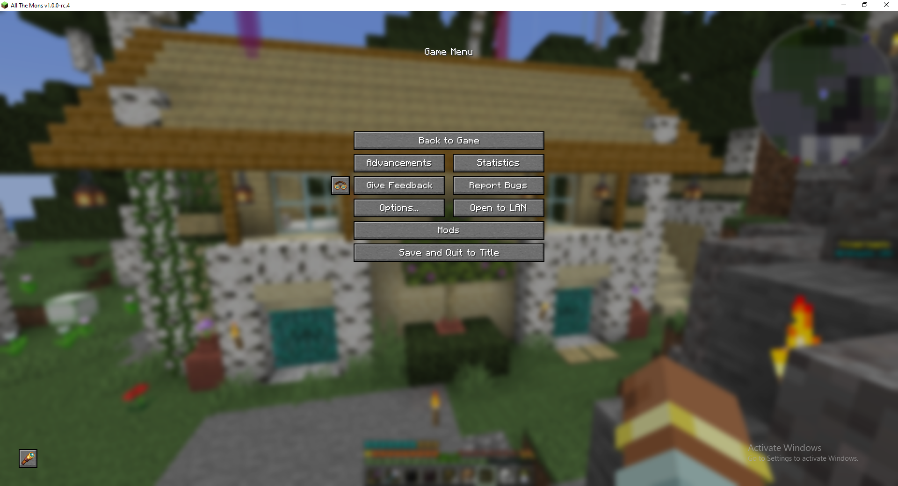
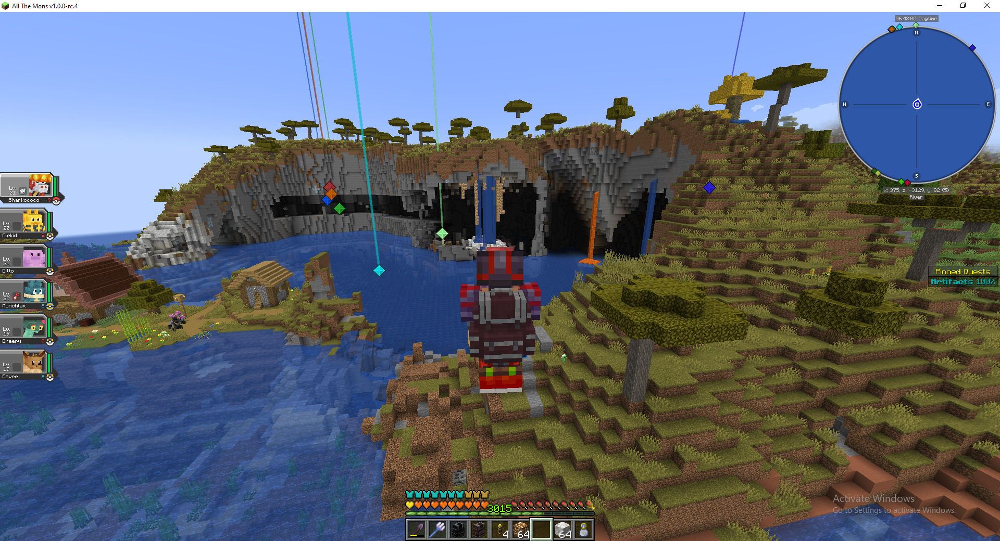

ATM Cobblemon is cobblemon and every single mod serialized to version 1.21.1 of minecraft. This pack has everything from titanical bosses to fossils that can reanimated into ancient Cobblemon.
Because of the radical amount of overhauls and changes in general I had to spend like 10-15 minutes changing my keybinds. Once I got into the world I noticed the changes in the world immediately. What gave it away was this one mystical blue tree in a birch biome! A birch biome has white and black zebra trees with slight grass, this was identical but it had that blue tree and this beautiful house that I immidiately explored! I have played a lot of Pixelmon and Pokemon which pixelmon is the predecessor to Cobblemon which I personally thought was better but they stopped updating/releasing it.
Since this was the only building next to the spawn of the world I decided to check it out. I barely even noticed it, its beauty was sublime and power was uncanny, it has many features packed into a little area, its uniqueness provided gave it the sense of true home. This building are supposed to be your starter house because this modpack is incredibly dangerous and the farther you get from spawn the worse it gets. I believe actual dragons spawn past 5 thousand blocks. I am not talking the cobblemon fun type of dragon either. This is the type of dragon that will obliterate you immediately without you even seeing it. Also if I get really unlucky their is also sea serpents. The dragons and sea serpents can be Tier 5 versions which spawn with their own generated structure and have 5, ish times the health as the ender dragon! (the ender dragon is the base minecraft boss that once completed signals that you have beaten the game and these monsters that are in this pack are small fry's compared to some of the craziest monstrosities in this pack) But anyways, as I went into the house I walked into a lovely kitchen with a sink, stove and a chest that contained some Cobblemon loot! Then I decided to look upstairs and I fell in love with the building and decided to make it my forever home. To fully explore it and exterminate potential ghouls I went into this office style section that is next to the front door but to the left and found something truly MYSTICAL!!! A Muchlax has appeared! (Muchlax is the baby version of Snorlax which to many is considered the strongest and most useful normal type pokemon in the game.) This is a hyper rare spawn in some elicit corner of the world, but for some reason he was chilling in my office! The starter pokemon I got was a firetype from the newest set of pokemon called Fuecoco I fell in love with the design and the ability to rename him into Sharkococo was too tempting.
Game story map
Gaming as a concept is a niche, this specific games scratching a loot monster based play style where the stronger you get the easier it is to obtain difficult pokemon. My first approach with Gym Leader Brok shook me to how difficult the pokemon side of this game is. What makes it fun is how this is balanced with how difficult the minecraft side of it is. I had to spend way more time prepping and getting equipment that allowed me to even walk out my front door! What is difficult about the game is how far you get thrown into a deep end Cthulhu would even be scared of! The music is a mix of upbeat dreamy and minimalism which really amplfies how your impact on the world feels when all interactions create more sound than the environment. I would suggest to anyone who decides they want to give this game a try that it is best to either give it your all or give up. You are going to have to automate a lot of things or spend absurd time grinding for loot. I recommend automating mob spawners by picking them up iwth cardboard boxes and adding sugar or clocks to increase spawn times. This is really useful for farming affixed items which is pinnacle to success in this mod. You cannot play the pokemon game before you automate a lot of things.
